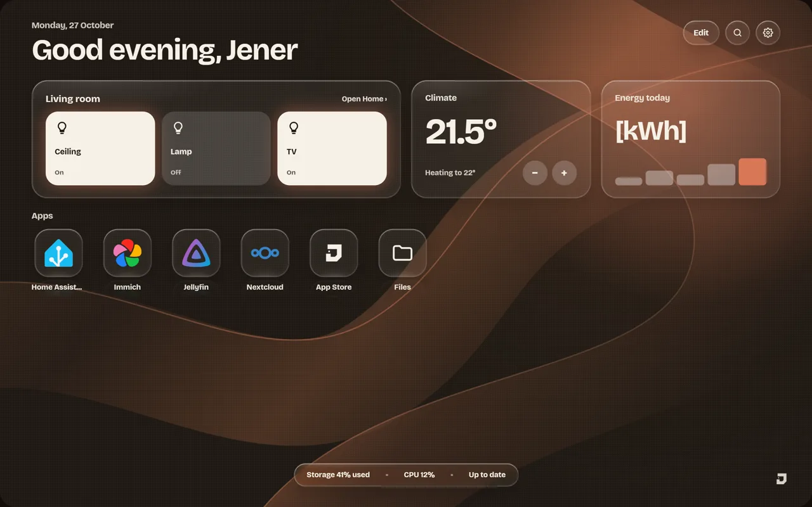
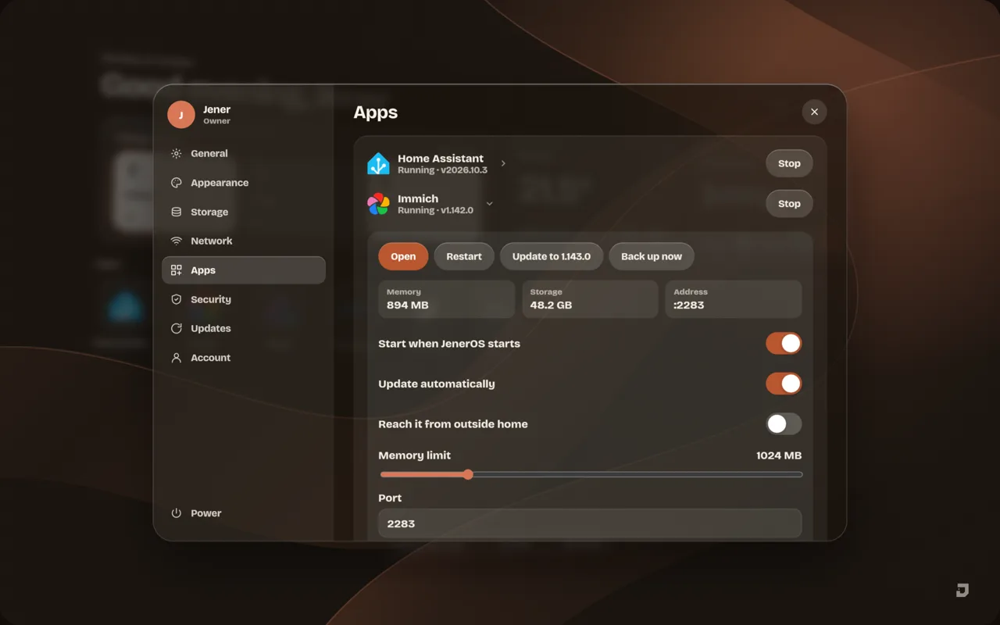
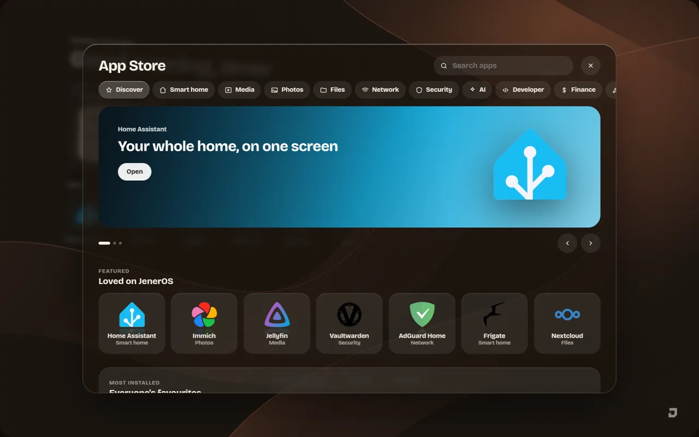

Hi, I'm Jener.
I build software from the OS up to the pixels.
I build whole products alone. The Linux system that boots, the Go service behind it, the dashboard you touch, and the film and sound that launch it.
I build every layer myself:
the system that boots,
the service that runs,
the screen you touch.
Systems · Backend · Interface · Motion · Film · Sound · Systems · Backend · Interface · Motion · Film · Sound ·
Linux · Go · JavaScript · CSS 3D · ffmpeg · Debian · Linux · Go · JavaScript · CSS 3D · ffmpeg · Debian ·
Projects
Open source on GitHub. Everything below was designed and built by me.
JenerOS early preview
A free home server OS that turns an old PC into a private cloud for photos, files, movies and the smart home.
- Read-only, tamper-checked Debian 13 system with A/B updates that roll themselves back
- Go service with owner login, storage wizard and an app runtime
- JenerOS Glass: a liquid-glass dashboard with 3D motion, built under a strict CSP (currently showing sample data)
- Phone setup by QR code, a product website and launch films
JenerOS Glass screens. Widgets and apps show sample data in this preview.



UmbrelOS on the Home Assistant Green
Getting UmbrelOS 2.0 onto the Home Assistant Green's internal eMMC (Rockchip RK3566), a board it was never made for, with a repeatable installer that checks the target disk before it writes anything.
What you can hand me
Systems
Linux images, read-only roots, verified boot, A/B updates and rollback, ARM boards.
Backend
Go services, local APIs, authentication, storage management and root workers.
Interface
Hand-built HTML, CSS and JavaScript: glass materials, 3D motion, accessible and fast.
Brand and film
Logos, product sites, frame-perfect launch videos, sound design and music.
Email me and I reply within a couple of days. My code lives on GitHub.